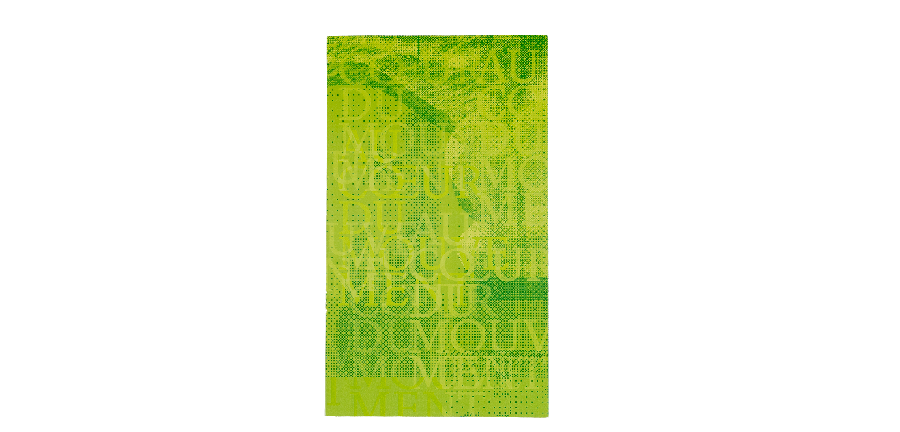
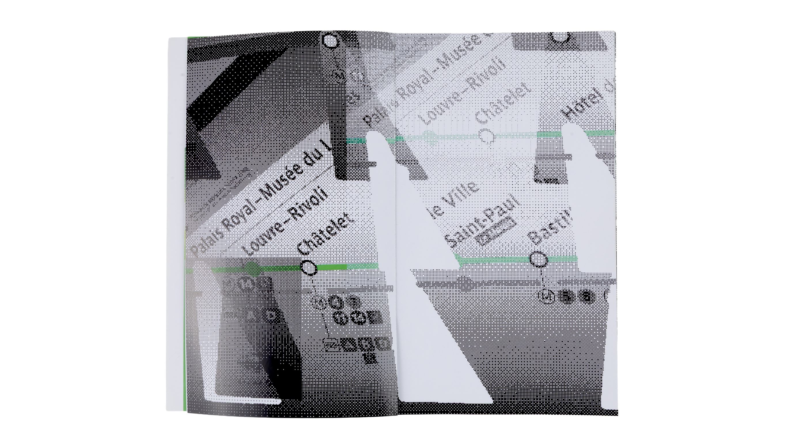
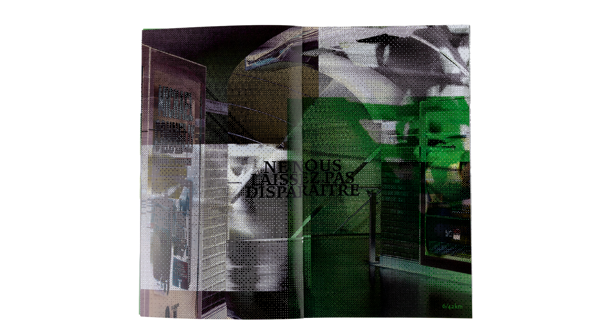
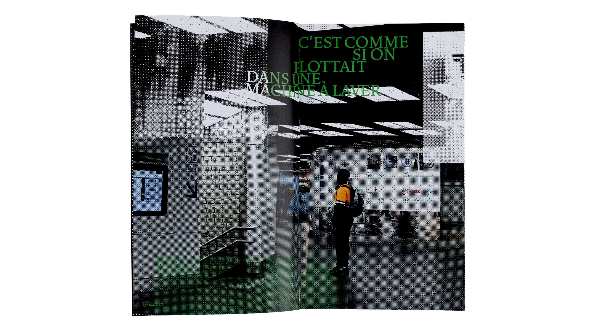
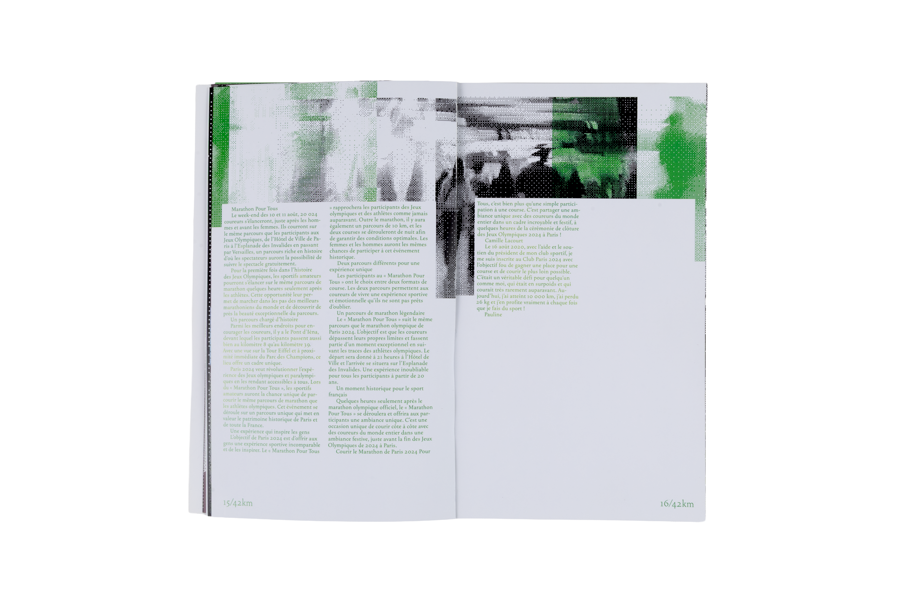
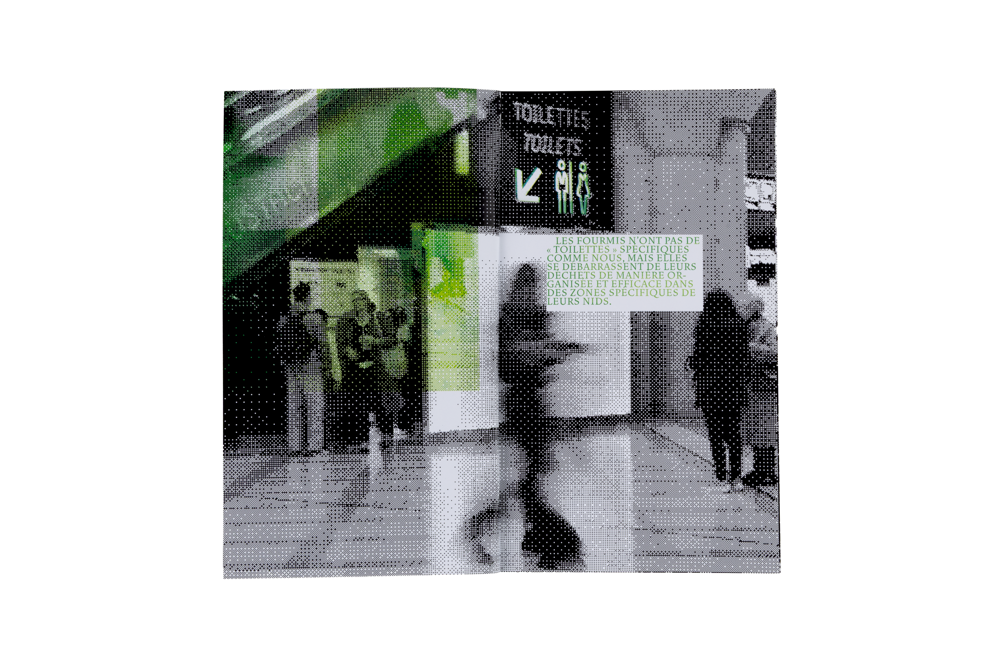
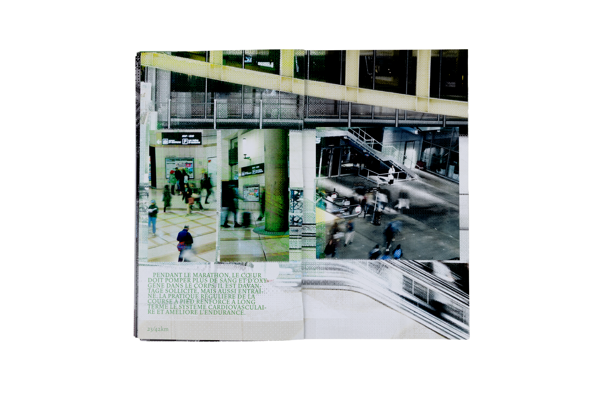
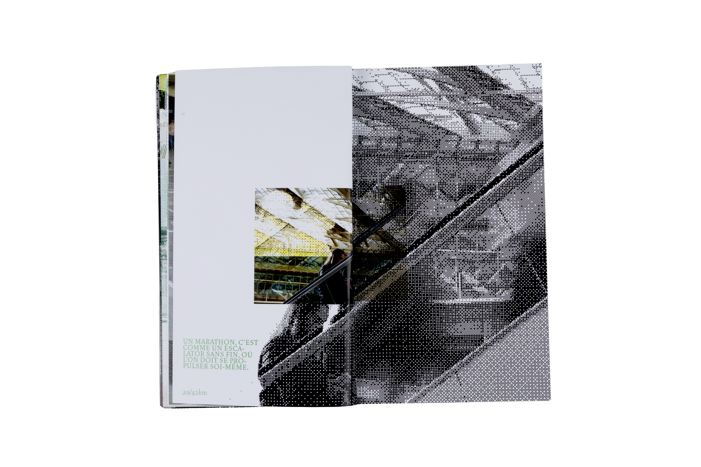
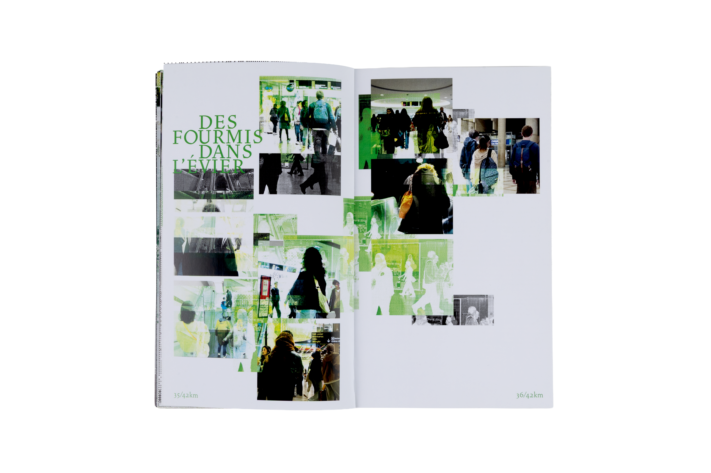
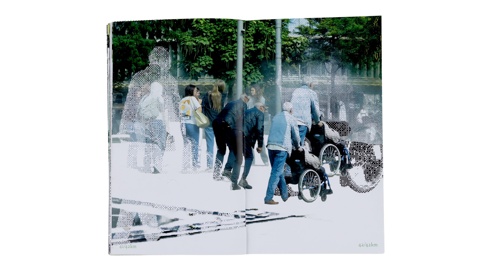

Projekte
About me
AT THE HEART OF MOVEMENT
Do you know that feeling of standing somewhere and suddenly shrinking — lost inside the pulse of a moving crowd? In Les Halles, I slipped into that stream, carried through dim corridors, directionless, as if running a race with no end. This sensation echoes through my layout: crawling bitmap ants, shadowed planes, and 42 pages that read like the kilometres of a marathon—printed on Heaven 42. Black marks disorientation, white becomes a brief flash of clarity, and green represents the organic canopy above Les Halles.










Paris Editorial
Philippe Desarzens
Martin Woodtli
Martin Infanger
Marianne Halter
Eva Kubini
Christoph Fischer
Philippe Buschinger
2024